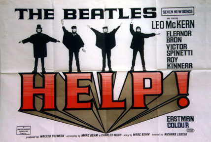
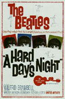
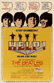

![[ return link ]](myback.gif)
 |
This is an original 1965 U.K. movie poster for the
release of the Beatles first color film HELP! This poster measures 39 1/2 x 27
1/2. Printed on heavy poster stock and came folded. Different than the U.S.
verticle version, this one is horizontal.
The reprints are 38
x 26, come rolled and are Quad
 |
 |
A Hard Day's Night (1964) was the Beatles'
first, feature-length motion picture. Directed by American Richard Lester, it
takes an imaginative look at a-day-in-the-life of the Fab Four. The madcap
result is a visual delight, with many Beatles songs on the soundtrack, including
"And I Love Her", "Can't Buy Me Love", "I Should Have
Known Better" and the title track. The score was written expressly for the
film.
HELP! (1965), The Beatles' second film, is a wild and funny picture about a religious sect who attempts to recover a sacrificial ring from Ringo, forcing The Beatles to travel the globe. This movie, again directed by Richard Lester, includes the popular songs 'Ticket to Ride," 'Another Girl' and "You've Got to Hide Your Love Away."
The two films were restored by Paul Rutan Jr. and 4-Media Company Film Laboratory, who worked closely with the films' producer, Walter Shenson, for nearly four years on the restoration process.
Until now, the only prints that existed on A Hard Day's Night were release prints manufactured (from a duplicate negative) in 1964 and, a few prints left over from a reissue in 1986. Rutan found these prints to be of poor quality and unsuitable to fill the requirements demanded by discerning viewers today. In order to produce top quality theatrical or broadcast elements, the original negative had to be secured. Eight of the ten reels were discovered in a vault in South Central L.A.
An exhaustive search in Los Angeles, Pittsburgh and London turned up only bits and pieces of the missing negative, leaving Rutan to believe it had been cannibalized and discarded. Also, to make matters worse, severe damage was discovered in several areas of the existing negative. Therefore, Rutan and his crew faced the daunting tasks of replacing the missing and damaged original negatives. Using a fine grain duplicating master from 1964, they applied various photographic processes to create a new restored duplicate negative that was very close to the original. Then they set out to repair the rest of the original negative, replacing the torn footage, fixing each splice and cleaning each frame with a scribe and solvent to remove ground in-dirt. The original negative was fully corrected for density and contrast, then a new print and a finegrain master were struck.
The restoration of HELP! was even more difficult. Again Rutan sought out the original negative. It was discovered in a vault in Los Angeles, greatly damaged and poorly repaired. For example, a section of negative in the "Bahamas sequence" had a seven-foot tear, plastered back together with scotch tape. Therefore, a suitable alternative element had to be located to replace the torn and damaged areas. No separation masters had ever been manufactured, and an interpositive struck in 1965 could not be located. An old duplicate negative (with German titles) was located in a vault in Pittsburgh, it was damaged and worn but the areas needed to replace the original was serviceable. Through photographic processes once again, a duplicate negative was created that closely resembled the original negative. The various tears and damage were replaced with restored footage.
Each frame on the original negative was then cleaned to remove dirt. The negative was fully color corrected and new prints and an interpositive were struck.
The restored negatives are now safely in deep-freeze storage at the Academy of Motion Picture Arts and Sciences.
[LINK] to more information on other Beatle Movie Posters